Android 安卓智能手机操作教程
作者：TeliuTe 来源：基础教程网
二十、使用微博 返回目录 下一课weico是新浪微博的客户端，可以方便地阅读、书写微博；
1、新浪微博
1）到官网上下载安装包：http://www.weico.com，也可以在应用市场中下载；
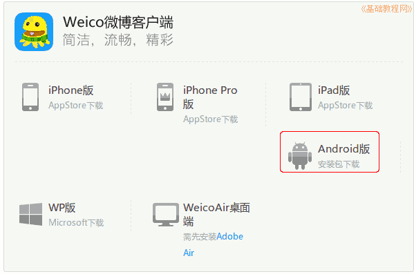
2）安装完成后，点“所有程序”里找，第一页没有就找第二页里，点按运行，提示在桌面创建快捷方式；
3）输入账号、密码点“登录”，没有新浪微博就点下边的“注册”；
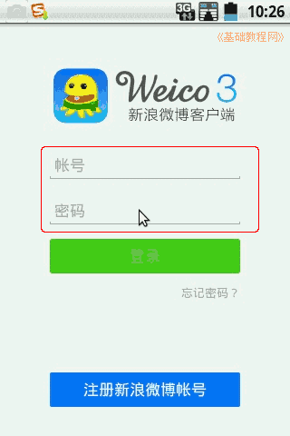
4）在出来的欢迎界面向左滑动到最右边，点下边的“立即体验”；
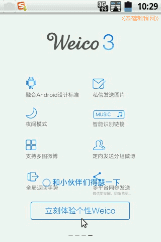
5）进入主界面，显示首页，中间是关注的微博，上边一个铅笔图标是书写微博，下边按钮分别是“首页、评论、查找和个人资料”；
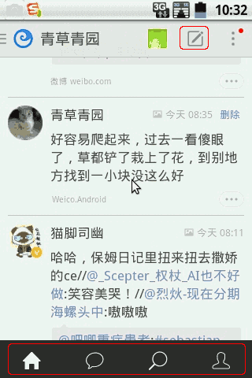
6）点按中间的一条微博，可以显示详细内容，包括里面的图片等；
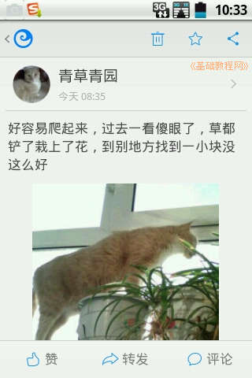
7）点按上边的铅笔图标，进入写微博的界面，输入内容点右上角的“发送”即可发一条微博，回到首页，下拉屏幕松开刷新一下；
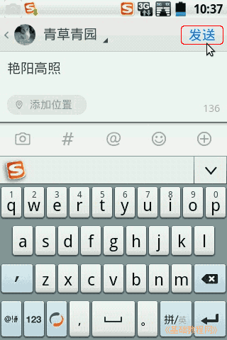
8）在书写微博下边工具栏上，点第一个相机图标，可以在微博中插入图片；
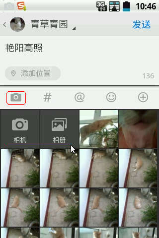
9）在下边出来的按钮中，选择拍照还是从相册中上传，选中一个图片，点下边的“完成”，就可以插入一张图片，再点发送即可；
10）工具栏里的井号“#”和花“@”，分别表示标签主题和呼叫某人，@后面跟一个用户名，双反斜杠“//”表示转发；
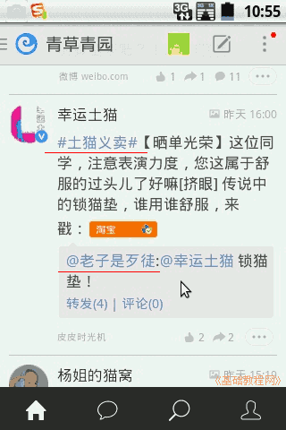
11）点按一个用户名或头像，在出来个人资料上，点“加关注”就可以关注对方，关注就是成为对方的粉丝，互粉是指双方互相加了关注；
2、设置
1）点按右上角的竖线设置按钮，在出来的菜单里选“设置”；
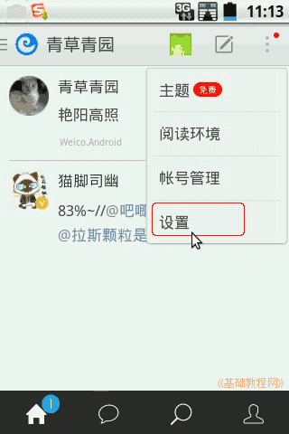 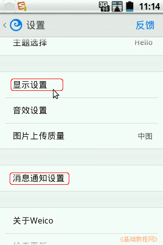
2）在“显示”设置中，可以设置是否在首页显示图片，自动旋转屏幕；
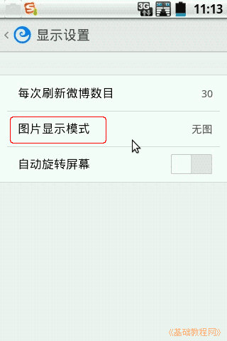
3）在“消息通知”中，可以设置消息推送的提示声音和推送类型；
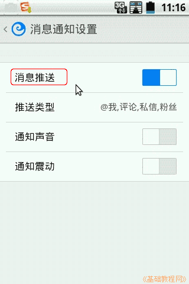
4）在设置的最下面可以旋转退出weico或者退出当前用户；
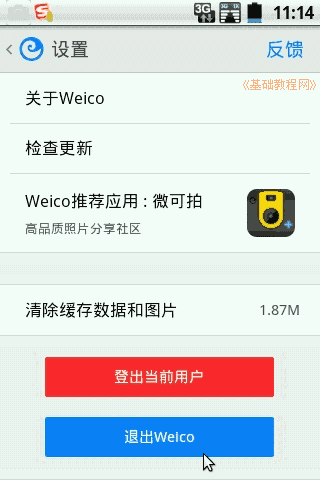
5）在音效设置里可以设置全部静音；
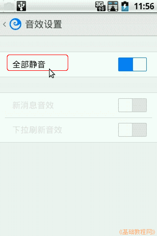
6）在首页右下角的个人资料中，点用户名右侧的圆圈“i”按钮，再点右上角的“修改”，可以编辑个人资料头像等，最后点“完成”；
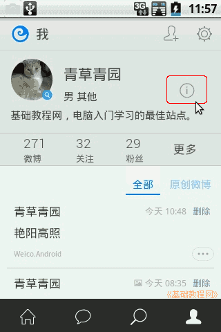 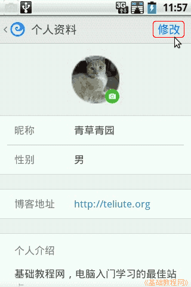
本节学习了使用微博的基础知识，如果你成功地完成了练习，请继续学习下一课内容；
本教程由86团学校TeliuTe制作|著作权所有
基础教程网：http://teliute.org/
美丽的校园……
转载和引用本站内容，请保留作者和本站链接。